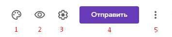
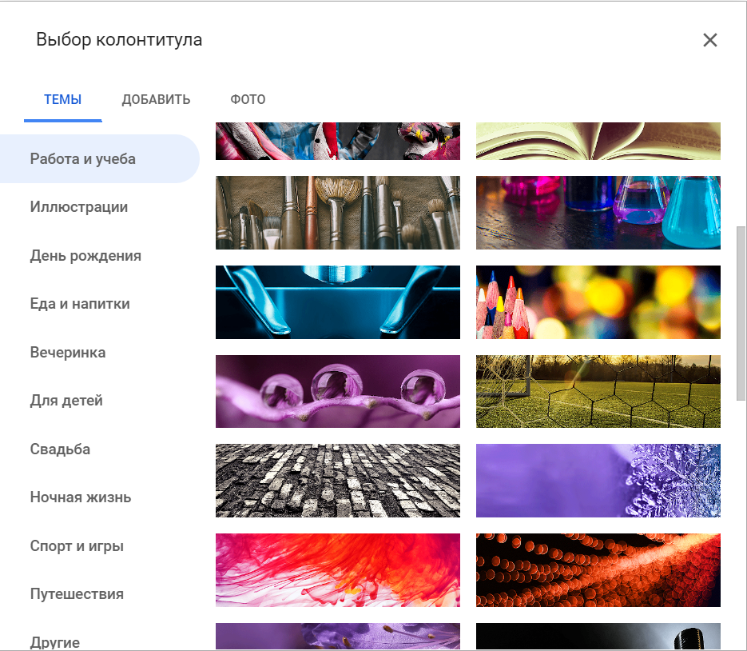
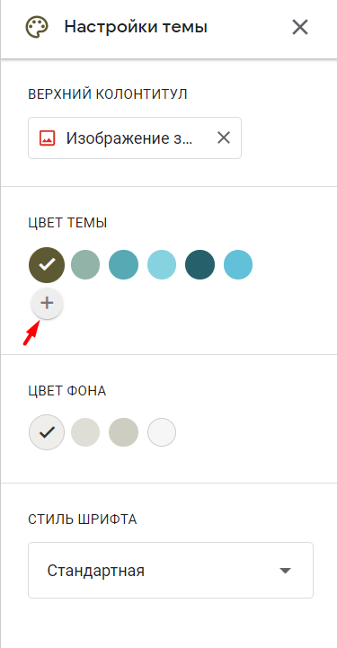
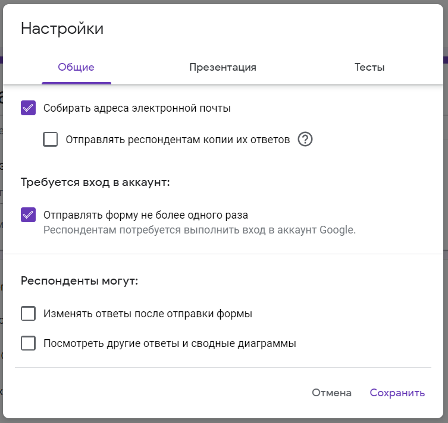
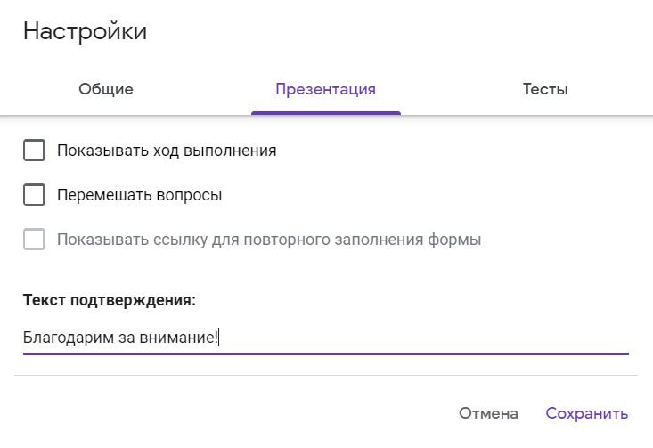
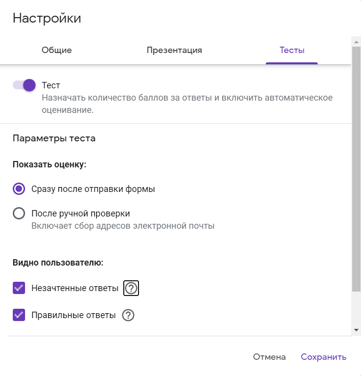
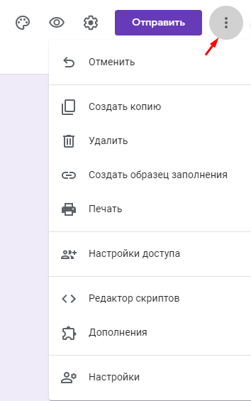

Панель инструментов в Google Forms
Давайте создадим google опрос с нуля, используя пустой шаблон.
Интерфейс у сервиса простой, приятный и интуитивно понятный. В верхней панели находятся элементы, с помощью которых можно задать основные настройки:
1. Настройки темы
Сделайте индивидуальным дизайн для гугл-формы, выбрав цвет вашего корпоративного стиля или воспользовавшись предложенными шаблонами. В Google Forms есть возможность выбирать изображение для верхнего колонтитула, изменять цветовую схему и шрифт.
Обложка – это первое, на что обратит внимание респондент при открытии вашей формы. Вы можете добавить собственную тематическую фотографию или брендированное изображение: логотип компании, баннер с промоакцией, названием и датой проведения мероприятия. Также можно воспользоваться галереей изображений, где они удобно распределены по темам.
После того, как вы выберете изображение для верхнего колонтитула, Google Forms автоматически подберет под него гармоничную цветовую схему. При желании тему можно изменить, нажав на иконку с плюсиком:
Что касается шрифтов, то выбор их тут невелик, а также отсутствует возможность добавить кастомные шрифты.
2. Предпросмотр
Полезная функция, которая пригодится перед отправкой формы. Позволяет увидеть форму такой, какой ее увидят ваши респонденты. Воспользоваться предпросмотром, чтобы оценить форму визуально, проверить все ли правильно работает и заметить все недочеты, можно на любом этапе ее создания.
3. Настройки
Вкладка “Общие”
Если вы хотите собирать адреса электронной почты ваших респондентов, нажмите галочку “Собирать адреса электронной почты”. При выборе этого пункта появится обязательное для заполнения поле “Адрес электронной почты” в начале формы. Пока пользователь не введет адрес email, ему будут недоступны для просмотра остальные разделы формы.
Также в этой вкладке можно задать, сможет ли респондент отправлять форму более одного раза. Эта функция поможет избежать искусственной накрутки показателей: если поставить галочку, пользователь должен будет авторизоваться в своем аккаунте Google и сможет ответить только один раз.
Здесь же можно настроить, могут ли респонденты изменять ответы после отправки формы и видеть другие ответы.
Вкладка “Презентация”
Добавляет некоторые визуальные штрихи вашему опросу: здесь вы можете вставить индикатор заполнения формы, выбрать функцию перемешивания вопросов, а также добавить текст, который будет показан респонденту после заполнения формы.
Вкладка “Тест”
Если вы создаете форму для тестирования, включите опцию “Тест” в этой вкладке. Это позволит назначать количество баллов за ответы и сделать оценивание автоматическим. Также здесь можно установить, что будет показано респонденту при прохождении теста:
4. Кнопка “Отправить”
Google Forms предлагает несколько удобных способов для отправки формы: в виде электронного письма, ссылки, как публикацию в Facebook и Twitter, а также в виде HTML-кода для вставки на сайт.
В этом разделе мы расскажем подробнее, как вставить опрос в электронное письмо.
5. Дополнительные настройки
В этой вкладке вам доступны различные действия с формой: копирование, удаление, печать, создание шаблона для заполнения, настройка доступа и некоторых параметров по умолчанию для всех новых форм.
Пункты меню “Редактор скриптов” и “Дополнения” расширяют возможности использования гугл форм, помогая реализовать различные полезные функции:
- получать уведомления, когда кто-то отправляет заполненную форму;
- автоматически закрывать форму в зависимости от установленного срока действия, количества принятых ответов или другого триггера;
- отправлять пользователям подтверждающее письмо о заполнении Google Forms и т.п.
Для опытных разработчиков вся необходимая информация о скриптах собрана в справочных материалах, а обычный пользователь найдет нужный ему инструмент в Дополнениях.
На данном этапе у нас уже есть новая гугл анкета с предварительно заданными настройками. Следующим этапом будет добавление всевозможных типов вопросов из панели инструментов, которую мы рассмотрим дальше в статье.